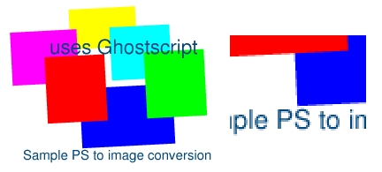
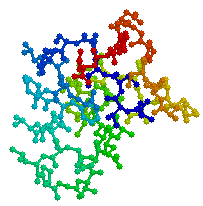
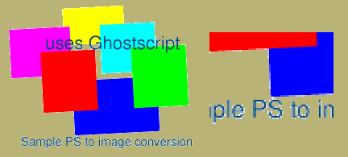

Aliasing is an artefact caused by inadequate sampling frequency (1). The term is most commonly applied to spatial aliasing, which manifests as visible pixelation - a blocky or jagged effect - especially with near horizontal or near vertical lines of high contrast. It is thus particularly noticed with textual annotation of images. Figure 1 shows a sample image, converted from a PostScript file with one sample per pixel, that displays severe spatial aliasing.
Figure 1: A severely aliased image.
Aliasing may be reduced by taking multiple samples of the underlying information. In the case of a computer graphics technique such as raytracing, this involves shooting multiple rays through different parts of each pixel. In the case of PostScript conversion to images, this is achieved by rasterising at a higher resolution then resampling down to the intended resolution. Figure 2 shows the same PostScript file rendered with 16 samples per pixel. Much less aliasing is seen. Careful examination of the edges of lettering and the coloured blocks shows that the background and foreground colours have been blended together based on their sub-pixel coverage.

Figure 2: An anti-aliased image.
Image file formats that support transparency are able to make certain designated pixels wholly or partially transparent, so that the background colour or texture shows through. In this way, non-rectangular images may be simulated regardless of the background colour or texture of the user agent, as in seen in Figure 3.

Figure 3: An image with binary transparency.
The simplest type of transparency is binary - each pixel is either on or off. This may be specified by a binary transparency mask, or (particularly with palette-based formats) by nominating a particular colour or group of colours to be transparent. The latter method is used by the GIF89a format [4] and is widely supported in current Web user agents.
There is a severe interaction between anti-aliasing and binary transparency. Because the background colour of the image is mixed in with the foreground colours, simply replacing a single background colour with another is not enough to simulate transparency. There will be a whole host of shades which are mixtures of background and foreground colours, as Figure 4 shows. The effect in this case is a white halo around objects, because the original image was anti-aliased to a white background colour.

Figure 4: Halo effect caused by anti-aliased edges.
An improvement on binary transparency is variable transparency, also known as an alpha mask or alpha channel. Here each pixel can take any value between fully opaque and fully transparent, and this value is independent of the colour of that pixel. Besides allowing smooth transitions between a graphic and the background, this permits a different type of antialiasing.
Foreground colours contributing to a particular pixel are mixed together according to their sub-pixel foreground coverage, ignoring contribution from the background. The alpha channel value is used to express the fractional contribution of the original background, irrespective of that background's colour. When rendered, this alpha channel specifies for each pixel what proportion of the existing background is to be mixed with the forground image data to produce the final colour of each pixel. In this way, the anti-aliased image can be displayed on any background or texture, or indeed composited on top of another arbitrary image, without the artefacts seen with binary transparency.
There has been an increase in the number of anti-aliased images as people strive for better quality, and this brings to the fore a number of interations. That between anti-aliasing and binary transparency has already been noted. Also, anti-aliased images contain a lot more colours than aliased ones, which puts pressure on the colour allocation strategy.
Variable transparency is most easily implemented with a truecolour display, because if any image pixel may be mixed with the user agent's background colour or texture in any proportion, the total number of colours in a displayed image can become quite large. It can be implemented in a colour-scarce environment provided an off screen buffer is provided to composite the image before reducing it to the current palette.
Future Web user agents should permit as inline images formats that support variable transparency, to allow quality anti-aliased images that are independent of the background colour or texture. Suitable formats include extended TIFF [5] and PNG [6]. This will encourage information providers to migrate away from formats that only support binary transparency, such as GIF89a.
This will also allow the OVERLAY attribute of the draft HTML 3.0 FIG element [7] to be deployed more effectively. Overlays are only of use if one can also see what is being overlaid.